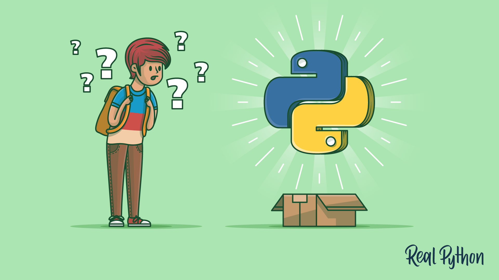

Python
Python is an interpreted high-level general-purpose programming language. Its design philosophy emphasizes code readability with the use of significant indentation. Its language constructs and object-oriented approach aim to help programmers write clear, logical code for small- and large-scale projects.[29] Python is dynamically-typed and garbage-collected. It supports multiple programming paradigms, including structured (particularly, procedural), object-oriented and functional programming. It is often described as a "batteries included" language due to its comprehensive standard library
"Python is an interpreted, object-oriented, high-level programming language with dynamic semantics. Its high-level built in data structures, combined with dynamic typing and dynamic binding, make it very attractive for Rapid Application Development, as well as for use as a scripting or glue language to connect existing components together. Python's simple, easy to learn syntax emphasizes readability and therefore reduces the cost of program maintenance. Python supports modules and packages, which encourages program modularity and code reuse. The Python interpreter and the extensive standard library are available in source or binary form without charge for all major platforms, and can be freely distributed. Often, programmers fall in love with Python because of the increased productivity it provides. Since there is no compilation step, the edit-test-debug cycle is incredibly fast. Debugging Python programs is easy: a bug or bad input will never cause a segmentation fault. Instead, when the interpreter discovers an error, it raises an exception. When the program doesn't catch the exception, the interpreter prints a stack trace. A source level debugger allows inspection of local and global variables, evaluation of arbitrary expressions, setting breakpoints, stepping through the code a line at a time, and so on. The debugger is written in Python itself, testifying to Python's introspective power. On the other hand, often the quickest way to debug a program is to add a few print statements to the source: the fast edit-test-debug cycle makes this simple approach very effective.
Dating from 1991, the Python programming language was considered a gap-filler, a way to write scripts that “automate the boring stuff” (as one popular book on learning Python put it) or to rapidly prototype applications that will be implemented in other languages. However, over the past few years, Python has emerged as a first-class citizen in modern software development, infrastructure management, and data analysis. It is no longer a back-room utility language, but a major force in web application creation and systems management, and a key driver of the explosion in big data analytics and machine intelligence.
n Python, everything in the language is an object, including Python modules and libraries themselves. This lets Python work as a highly efficient code generator, making it possible to write applications that manipulate their own functions and have the kind of extensibility that would be difficult or impossible to pull off in other languages. Python can also be used to drive code-generation systems, such as LLVM, to efficiently create code in other languages.